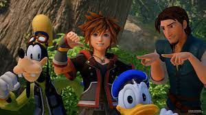
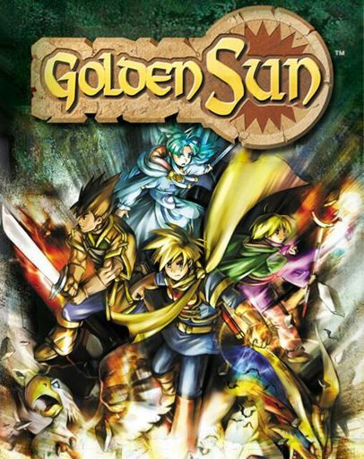
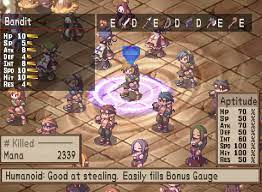
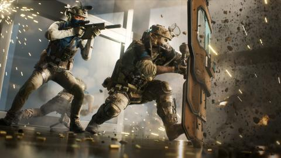
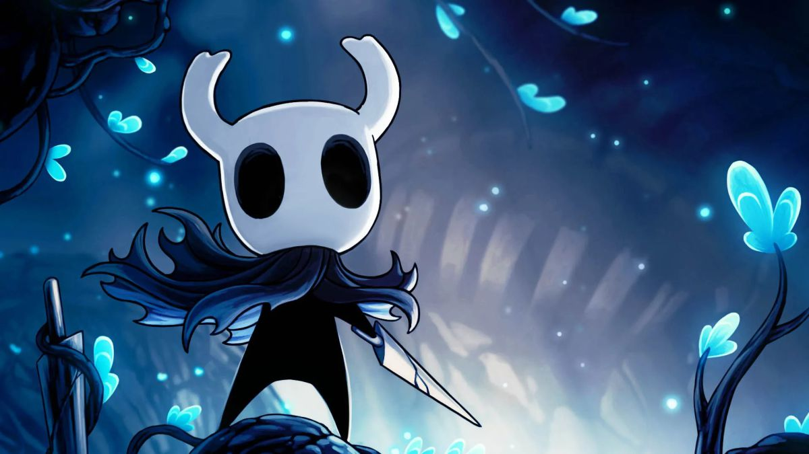

-
Un videojuego de rol, también llamado por las siglas inglesas RPG (role-playing game), es un género de videojuegos donde
el jugador controla las acciones de un personaje (o de diversos miembros de un grupo) inmerso en algún detallado mundo.
Hay varios tipos de rol, como son RPG de acción , JRPG, RPG tácticos.
 

-
Los videojuegos de disparos, tiros o shooters' conforman un género que tienen la característica común de permitir controlar un personaje que,
por norma general, dispone de un arma (mayoritariamente de fuego) que puede ser disparada a voluntad. Nomalmente, son en primera persona.

-
Los videojuegos independientes, popularmente clasificados como Indies, son videojuegos desarrollados por grupos reducidos de individuos o pequeñas empresas.
No suelen contar con el apoyo financiero de distribuidores y publicistas,
sino que su difusión depende principalmente de la voluntad de los jugadores para compartirlos con otros. Existen subgrupos pertenecientes como son
el metroidvania o plataformas.
